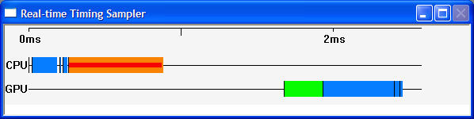

The Real-time Timing Sampler window shows real-time CPU and GPU timing information for the currently running Xbox application. Sampling occurs every frame. Real-time sampling is possible only for titles that are compiled with the April 2003 version of the XDK, or later. Real-time sampling enables you to move through scenes in your title until you find frames that are slow, at which point you can use timing and push-buffer captures to further pinpoint problems.
